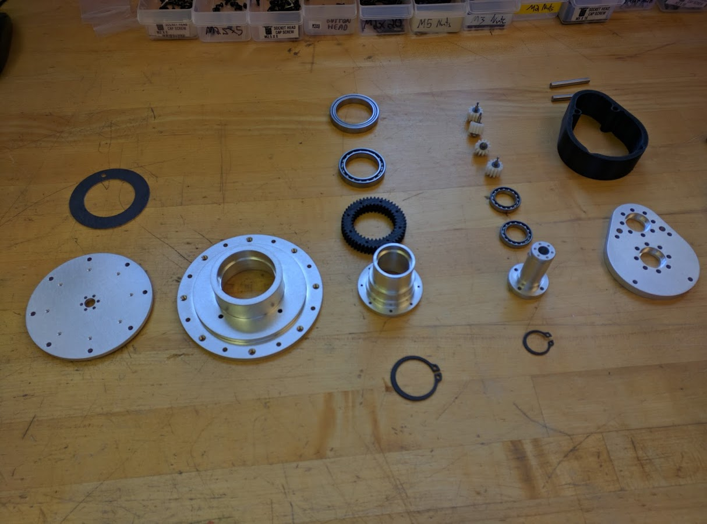

Abstract
Part of my work at MIT in d’Arbeloff Laboratory, I developed a 3-DoF robotic arm using custom actuators with variable gear-ratios. The aim is to develop a lightweight & high-payload architecture for mobile and portable robots.
Publications & Resources
🔗 Link: Fast and strong lightweight robots based on variable gear ratio actuators and control algorithms leveraging the natural dynamics📄 Article (IEEE): A. Girard and H. H. Asada, "Leveraging natural load dynamics with variable gear-ratio actuators," IEEE Transactions on Robotics, vol. 33, pp. 285-298, 2017.📄 Article (arXiv): A. Girard and H. H. Asada, "Leveraging Natural Load Dynamics with Variable Gear-ratio Actuators," 2024.📄 Article (arXiv): A. Girard and H. H. Asada, "A Fast Gear-Shifting Actuator for Robotic Tasks with Contacts," 2022.📄 Article (arXiv): A. Girard and H. H. Asada, "A two-speed actuator for robotics with fast seamless gear shifting," 2024.📄 Article (IEEE): A. Girard and H. H. Asada, "A two-speed actuator for robotics with fast seamless gear shifting," 2015 IEEE/RSJ International Conference on Intelligent Robots and Systems (IROS), pp. 410-417, 2015.💻 Code (GitHub): github link
Project Media
Prototype actuator

Prototype actuator

3 DoF arm

Actuator custom parts
Prototype actuator
Prototype actuator
Prototype actuator